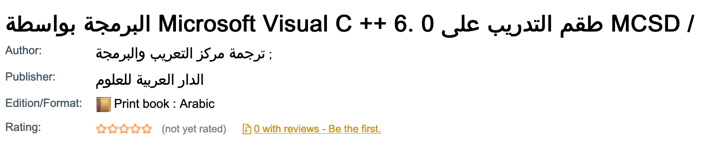
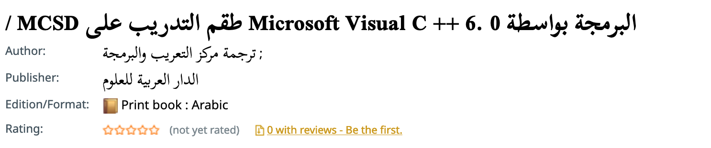

Andrew Cunningham
Internationalization
and libraries
Encodings and character sets
- Coded character sets
- Character encodings
MARC-8 and EACC
- Originally Latin script
- JACKPHY – Japanese, Arabic, Chinese, Korean, Persian, Hebrew, and Yiddish
- JACKPHY Plus – added Cyrillic and Greek
- Variant of the ISO-2022 encoding
- The combining characters and base characters are in a different order than used in Unicode.
- A set of graphic character sets (SBCS and MBCS)
- Invoked by means of a multiple byte escape sequence
Unicode
- Enable the encoding, representation, and handling of text expressed in most of the world's writing systems (Both modern and historical).
- Around 144,697 characters
- 159 modern and historic script
- Multiple character encodings: UTF-8, UTF-16, UTF-32, and others.
- The Unicode code-space is divided into seventeen planes, numbered 0 to 16
Unicode
- Basic Multilingual Plane
- Supplementary Multilingual Plane
- Supplementary Ideographic Plane
- Tertiary Ideographic Plane
MARC-8 and UTF-8 are the valid encodings for MARC21 records.
Tools and libraries that use or generate MARC21 data often assume all data is either MARC-8 or UTF-8.
Normalization
Examples
ệ – ệ 1EC7
ệ – ẹ◌̂ 1EB9 0302
ệ – ê◌̣ 00EA 0323
ệ – e◌̂◌̣ 0065 0302 0323
ệ – e◌̣◌̂ 0065 0323 0302
All forms are canonically equivalent.
Normalisation forms
- Normalization Form Canonical Decomposition (NFD) – Characters are decomposed by canonical equivalence, and multiple combining characters are arranged in a specific order.
- Normalization Form Compatibility Decomposition (NFKD) – Characters are decomposed by compatibility, and multiple combining characters are arranged in a specific order
- Normalization Form Canonical Composition (NFC) – Characters are decomposed and then recomposed by canonical equivalence.
- Normalization Form Compatibility Composition (NFKC) – Characters are decomposed by compatibility, then recomposed by canonical equivalence.
Example
ử – ử 1EED
ử – ư◌̉ 01B0 0309
ử – ủ◌̛ 1EE7 031B
ử – u◌̛◌̉ 0075 031B 0309
ử – u◌̉◌̛ 0075 0309 031B
ử 1EED (NFC)
u◌̛◌̉ 0075 031B 0309 (NFD)
ư◌̉ 01B0 0309 (MARC-21)
Latin divergences from NFD
| Character | MARC21 | NFD |
|---|---|---|
| Ơ | U+01A0 | U+004F U+031B |
| ơ | U+01A1 | U+008F U+031B |
| Ư | U+01AF | U+0055 U+031B |
| ư | U+01B0 | U+0075 U+031B |
Languages of Vietnam, and Thai and Lao romanisation
Cyrillic divergences from NFD
| Character | MARC21 | NFD |
|---|---|---|
| Ё | U+0401 | U+0415 U+0308 |
| ё | U+0451 | U+0435 U+0308 |
| Ѓ | U+0403 | U+0413 U+0301 |
| ѓ | U+0453 | U+0433 U+0301 |
| Ї | U+0407 | U+0406 U+0308 |
| ї | U+0457 | U+0456 U+0308 |
Cyrillic divergences from NFD
| Character | MARC21 | NFD |
|---|---|---|
| Ќ | U+040C | U+041A U+0301 |
| ќ | U+045C | U+043A U+0301 |
| Ў | U+040E | U+0423 U+0306 |
| ў | U+045E | U+0443 U+0306 |
| Й | U+0419 | U+0418 U+0306 |
| й | U+0439 | U+0438 U+0306 |
Arabic divergences from NFD
| Character | MARC21 | NFD |
|---|---|---|
| آ | U+0622 | U+0627 U+0653 |
| أ | U+0623 | U+0627 U+065 |
| ؤ | U+0624 | U+0648 U+0654 |
| إ | U+0625 | U+0627 U+0655 |
| ئ | U+0626 | U+064A U+0654 |
Bidirectional support
Right-to-left scripts
Contemporary scripts
Adlam, Arabic, Garay, Hanifi Rohingya, Hebrew, Mandaic, Mende Kikakui, N'Ko, Samaritan, Syriac, Thaana, and Yezidi.
Right-to-left scripts
Historical scripts
Indus script, Egyptian hieroglyphs, Cypriot syllabary, Phoenician alphabet, Imperial Aramaic, Old South Arabian, Old North Arabian, Pahlavi, Avestan, Hatran, Sogdian/Manichaean, Nabatean, Old Ge'ez, Kharosthi, Old Turkic runes (Orkhon runes), Old Hungarian runes, Old Italic alphabets (Early Etruscan), Lydian alphabet (RTL, LTR, & boustrophedon)
Text direction: HTML
The dir global attribute indicates the directionality of the element's text. It can have the following values:
- ltr – left to right
- rtl – right to left
- auto – first strong direction
<html lang="aii-Syrn" dir="rtl">
⋮
</html>
Text direction: text strings
In the first instance, rely on the Unicode Bidirectional Algorithm (UCA)
When the default bidi rendering isn't enough, use directional formatting characters


(function() {
'use strict';
document.body.style.fontFamily = "'Bibliotheca LCG', 'Noto Sans'";
document.querySelectorAll(".vernacular").forEach(vern => {
vern.setAttribute("dir", "auto")
});
/* Arabic - ar */
document.querySelectorAll(".vernacular:lang(ar)").forEach(vern => {
vern.setAttribute("dir", "rtl");
vern.style.fontFamily = "'Scheherazade New', Amiri";
vern.style.textAlign = "right";
});
/* Persian - fa */
document.querySelectorAll(".vernacular:lang(fa)").forEach(vern => {
vern.setAttribute("dir", "rtl");
vern.style.fontFamily = "'Scheherazade New', Amiri";
vern.style.textAlign = "right";
});
/* Russian - ru */
document.querySelectorAll(".vernacular:lang(ru)").forEach(vern => {
vern.setAttribute("dir", "ltr");
vern.parentElement.innerHTML = vern.parentElement.innerHTML.replaceAll("i︠a︡", "i͡a").replaceAll("i︠u︡", "i͡u").replaceAll("t︠s︡", "t͡s");
});
})();
Language tagging
- Language(s) of resource
- Language(s) of metadata
- UI language
ISO 639
- ISO 639-1 – two character alphabetic code
- ISO 639-2 – three character alphabetic code (Terminology and Bibliographic)
- ISO 639-3 – three character alphabetic code for comprehensive coverage of languages
- ISO 639-5 – three character alphabetic code for language families and groups
Other standards
- ISO 3166
- ISO 3166-1 – including two-letter country codes, three-letter country codes, and three digit country codes
- ISO 3166-2 – code for provinces, states, departments and regions of each country
- ISO 15924 – four-letter and three-digit codes for scripts (writing systems)
- IETF BCP 47 – a standard for identifying languages on the internet
The anatomy of a BCP47 language tag
language-extlang-script-region-variant-extension-privateuse
- en-AU-simple
- zh-Hans-CN
- zh-Hans
- ja
- es-419
- pt-BR
ALA-LC Romanization
Transliteration versus transcription
| Ελληνική Δημοκρατία | |
|---|---|
| Ellēnikḗ Dēmokratía | elinikí ðimokratía (IPA) |
Hellēnikē Dēmokratia
ALA-LC Romanization isn't always one to one.
ໄຊ
ໄຊ້
ໄສ
ໄ໊ຊ
ໄສ່
ໄສ້
ໄ໋ຊ
⇒ sai
ໄ ⇒ ai ; ຊ ⇒ s ; ສ ⇒ s ; tones ⇒ ∅
Fonts
There are too many characters in Unicode for a single font. Require flexible approach to web typography.
- OpenType fonts
- Variable fonts
- Noto fonts
- Font CDNs, e.g Google Fonts